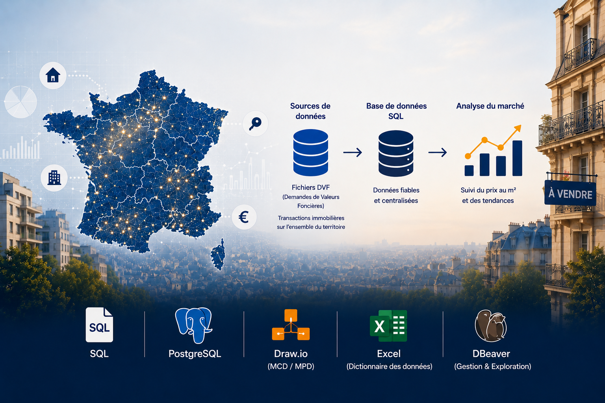
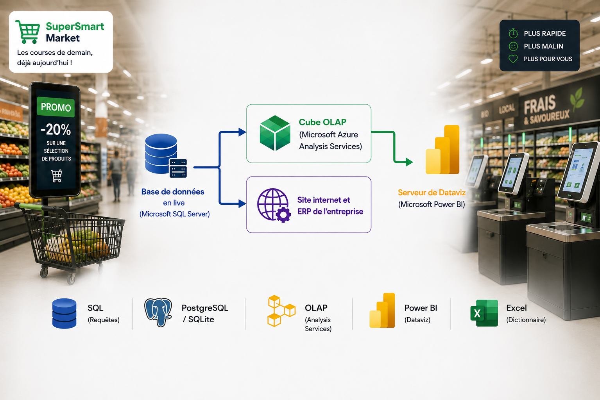
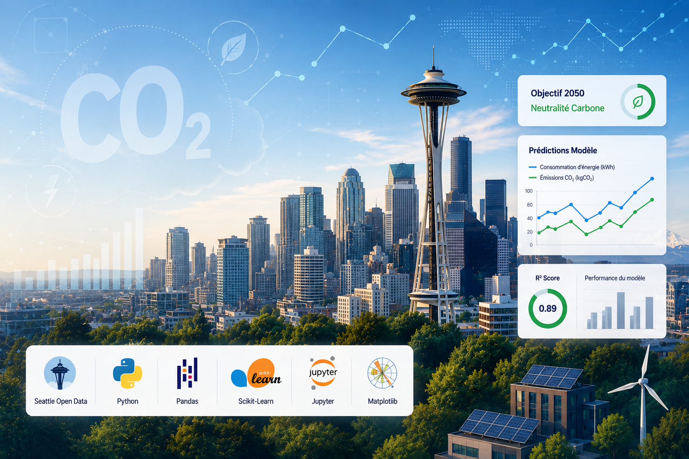
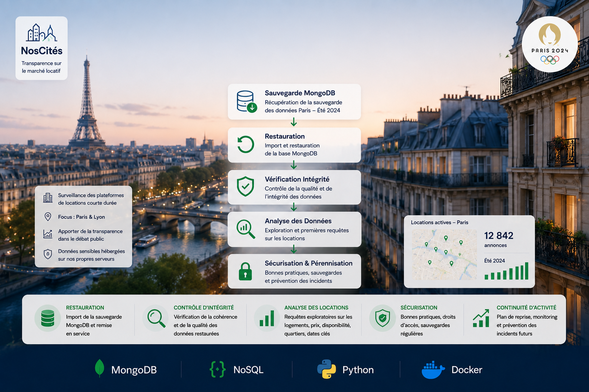
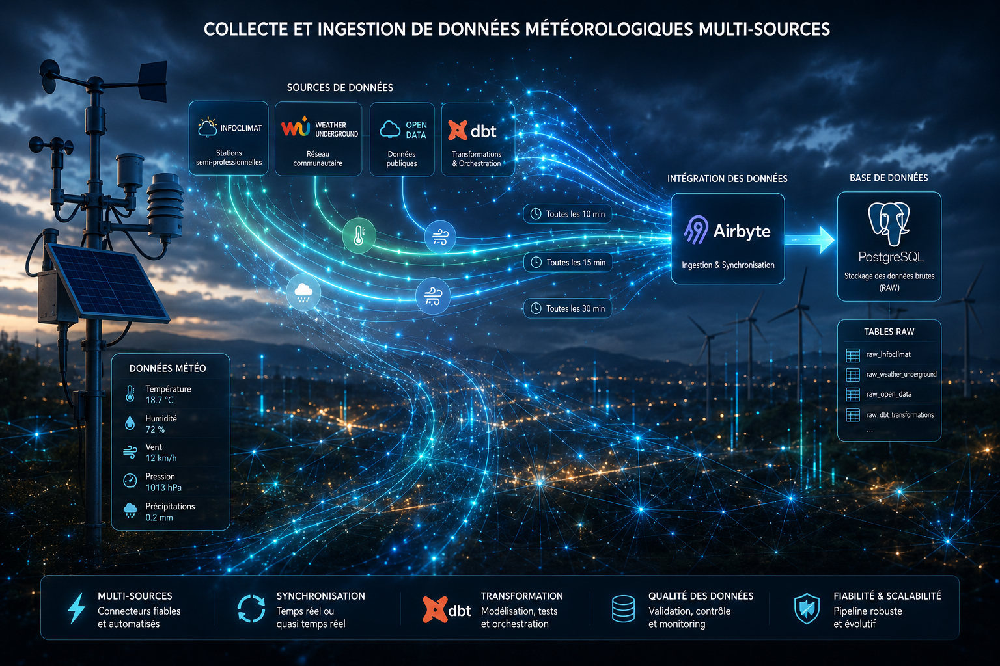
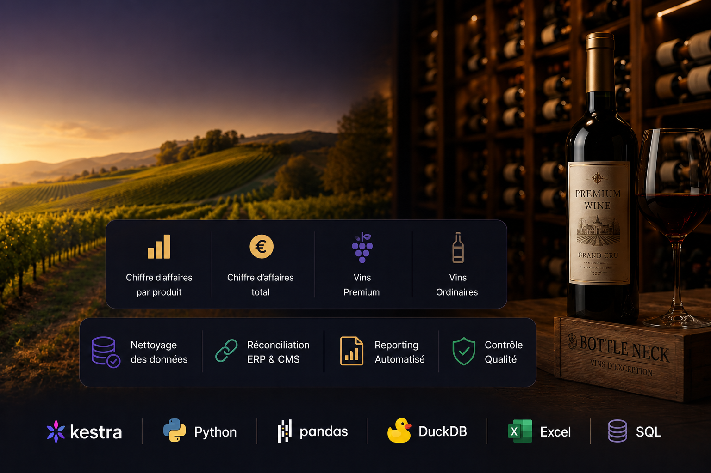
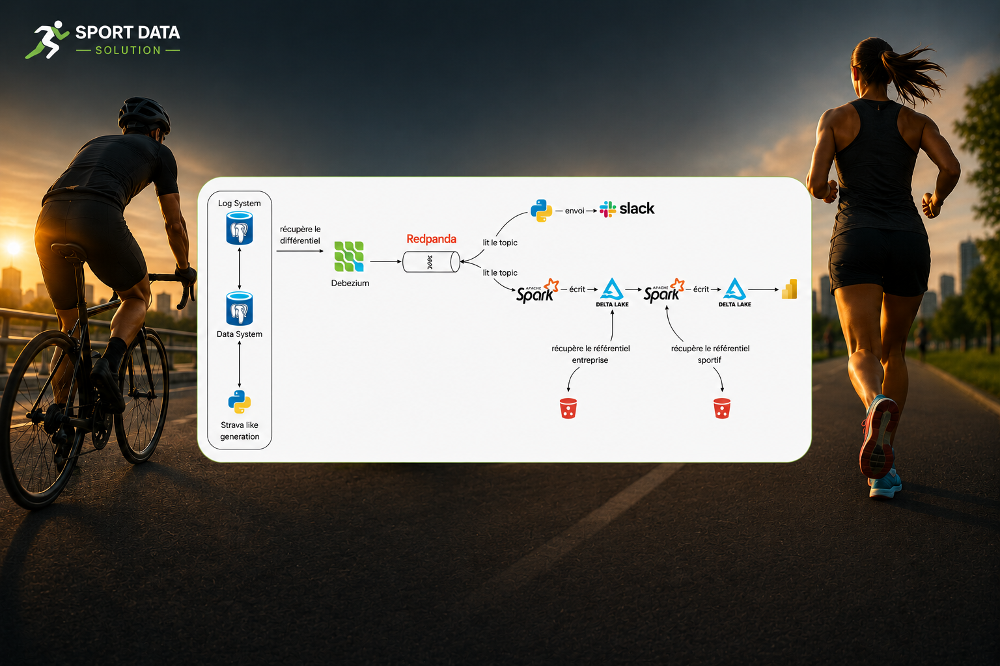

👋 Bonjour, je suis
Je conçois des architectures de données modernes, j'automatise des pipelines de données dans le cloud et je développe des solutions d'intelligence artificielle performantes.
Docteur en Mathématiques Appliquées, spécialisé en Probabilités et Statistique, et titulaire d'un titre RNCP niveau 7 en Data Engineering, je mets à profit une double expertise scientifique et technique pour concevoir des architectures de données robustes et des solutions d'intelligence artificielle à forte valeur ajoutée.
À travers plus de 10 projets Data & IA, j'ai développé des pipelines de traitement de données, des architectures Big Data et des modèles de Machine Learning conçus pour le passage à l'échelle, répondant à des problématiques concrètes d'analyse, de prédiction et d'aide à la décision.







AWS Certified Solutions Architect – Associate (SAA-CO3)
AWS Certified Machine Learning Engineer - Associate (MLA-CO3)
Email : emakouaal@gmail.com